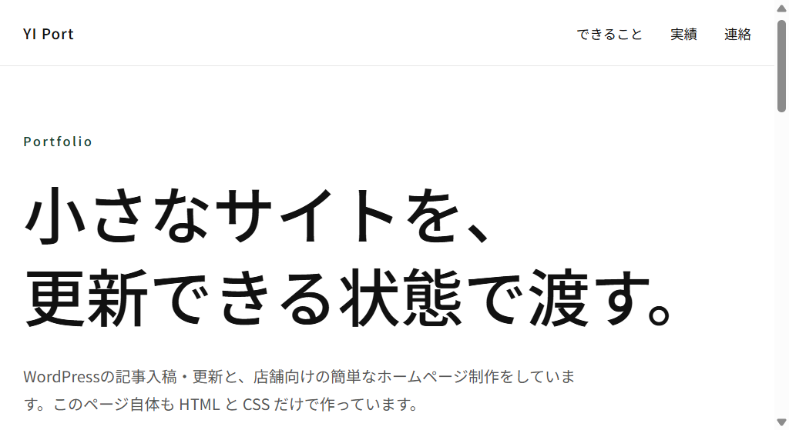
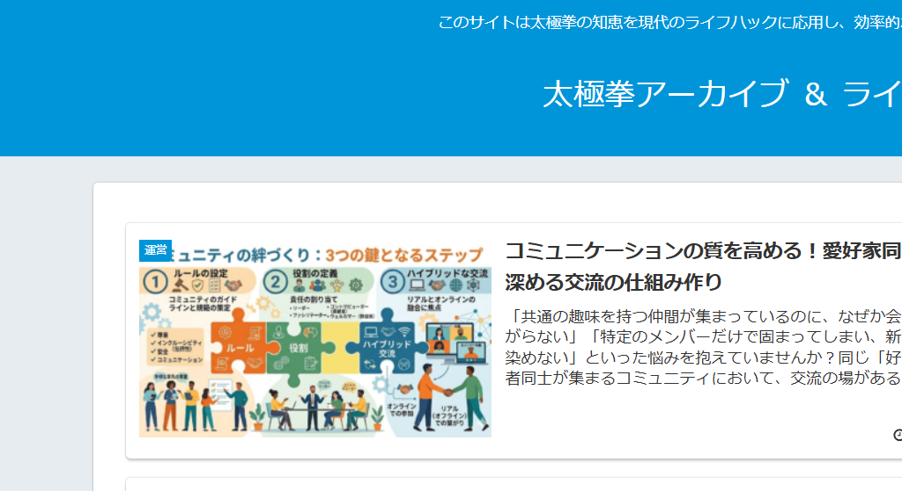
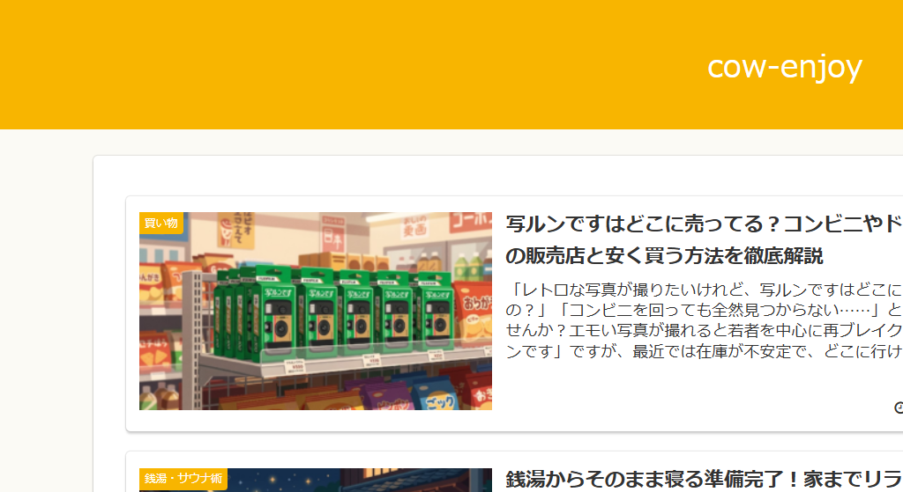

WordPress 入稿・更新
- 見出し（H2 / H3）の整理
- 箇条書き・強調・表
- 画像の挿入
- 内部リンク
- メタディスクリプション
Portfolio
WordPressの記事入稿・更新と、店舗向けの簡単なホームページ制作をしています。このページ自体も HTML と CSS だけで作っています。
公開して問題ないものだけ載せています。店舗向けの見本サイトは準備中です。

このサイト
HTML・CSSのポートフォリオ。レンタルサーバーに静的ファイルで公開。
https://yiport.xyz/
WordPress
情報サイトの作成・運営。見出しと記事構成、継続的な更新。
https://ntjk.jp/
WordPress
生活寄りの記事サイト。入稿と同じ作業（見出し・画像・内部リンク）で運営。
https://cow-enjoy.jp/ご依頼はクラウドワークスなど、案件ページからご連絡ください。このサイトには個人の住所・電話は載せていません。
WordPress記事入稿・更新 ／ 小さなホームページ制作